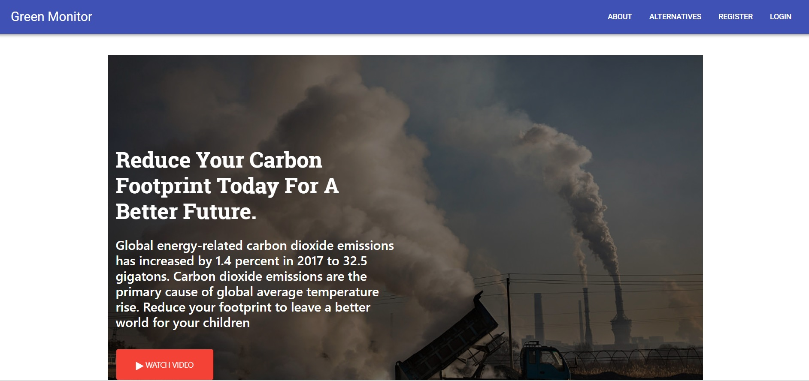
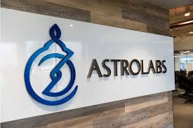

Web Developer - Deira International School,Dubai (Sept 2016 - Present)
Developed various web applications using ASP.NET, AngularJS, Bootstrap and Material Design.
Major Projects:
Accounts and Tax Invoice application with multiple currencies options, VAT integration, service approval logs and various customizations.
Online Admission website which helped parents and the department easily track applications. Been used by 800 parents in the past 1 year.(Admissions Portal)
Staff appraisal application- Gives a quick one-page view of each staff’s details and performance history
Junior Developer Internship - Al Asas Information Technology, Sharjah (July 2013 - Sept 2013)
Developed a web application for faculty and staff at Skyline University to eliminate manual work and generate reports for various daily tasks such as course registration, transfers etc.
school
Education
MSc in Advanced Software Engineering - Edinburgh Napier University, UK (Jan 2015 - July 2016)
Accredited by British Computer Society
Main Courses: Enterprise Computing, Programming for the Web (ASP.NET MVC), Advanced Software Development, Emergent Computing for Optimization, Formal Approaches for Software Engineering (B Method)
Dissertation: Keepsakes in the Digital Age – Finalist in British Computer Society Lovelace Colloquium March 2016 at Sheffield, UK
BSc in Information Systems and Management (Sept 2011 - Sept 2014)
Secured 1st Rank and awarded Academic Excellence Award
Main Courses: Project Management, Web Technology, Software Engineering
Dissertation: Application of Data Mining for HR in the Educational Sector – An Empirical Study : Published in the International Journal of Computing and Informational Technology Vol. 3 Issue 5
Loves to develop user-friendly, innovative and modern responsive web applications.
Projects

Green Monitor
Basic ReactJS app created during Astrolabs Bootcamp to reduce carbon footprint.
 Astrolabs Coding Bootcamp (June 2018 – August 2018)
The program focused on modern technologies used by full stack developers that included: Domains, Hosting, Basics of WordPress, HTML, CSS, JavaScript, Node JS, MongoDB, Mongoose, Webpack, Git, React JS and even the basics of React Native (to build hybrid mobile apps)!
Microsoft Certified Training – 20488 -Developing Microsoft SharePoint Server 2013 Core Solutions (August 2017)
This course focused on core skills that are common to most SharePoint development activities. These include working with the server-side and client-side object models, developing and deploying features, solutions, and apps, managing identity and permissions, querying and updating list data, managing taxonomy, using workflow to manage business processes, and customizing the user interface.
A modern responsive front-end framework based on Material Design